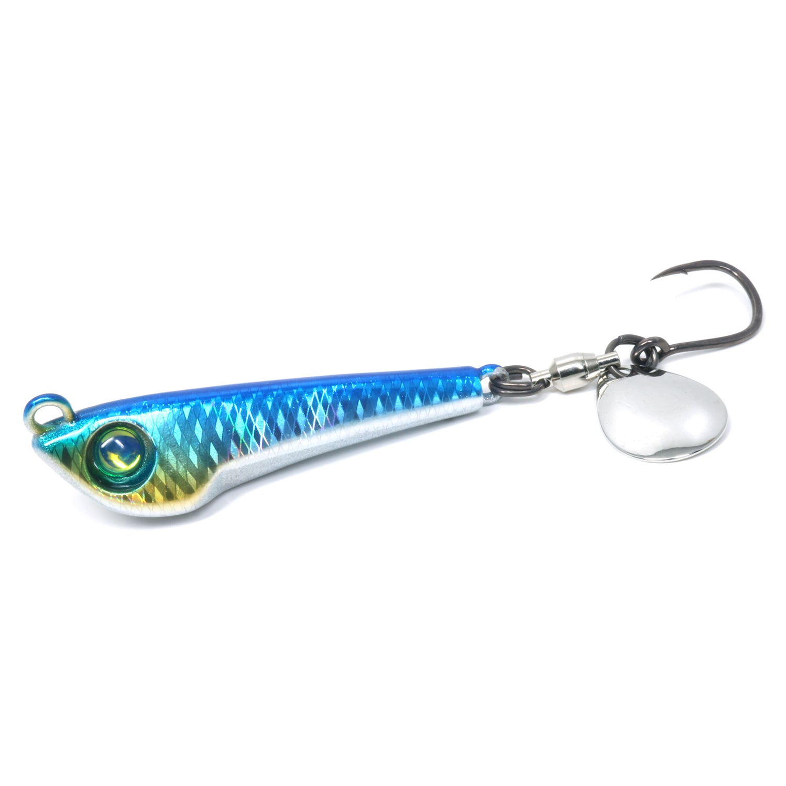
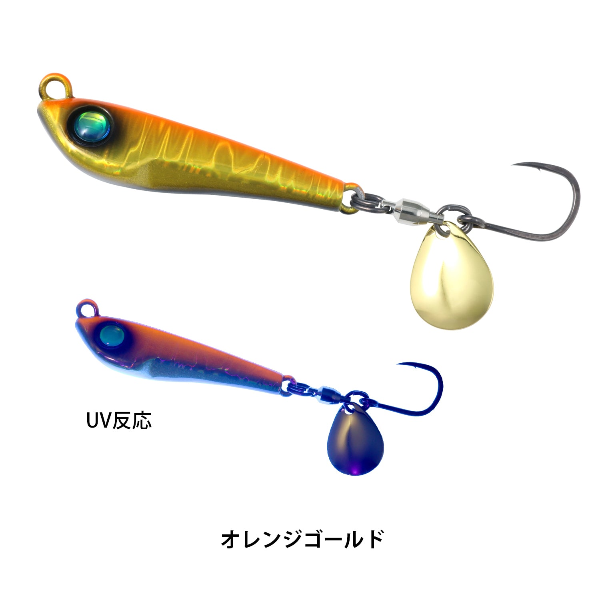
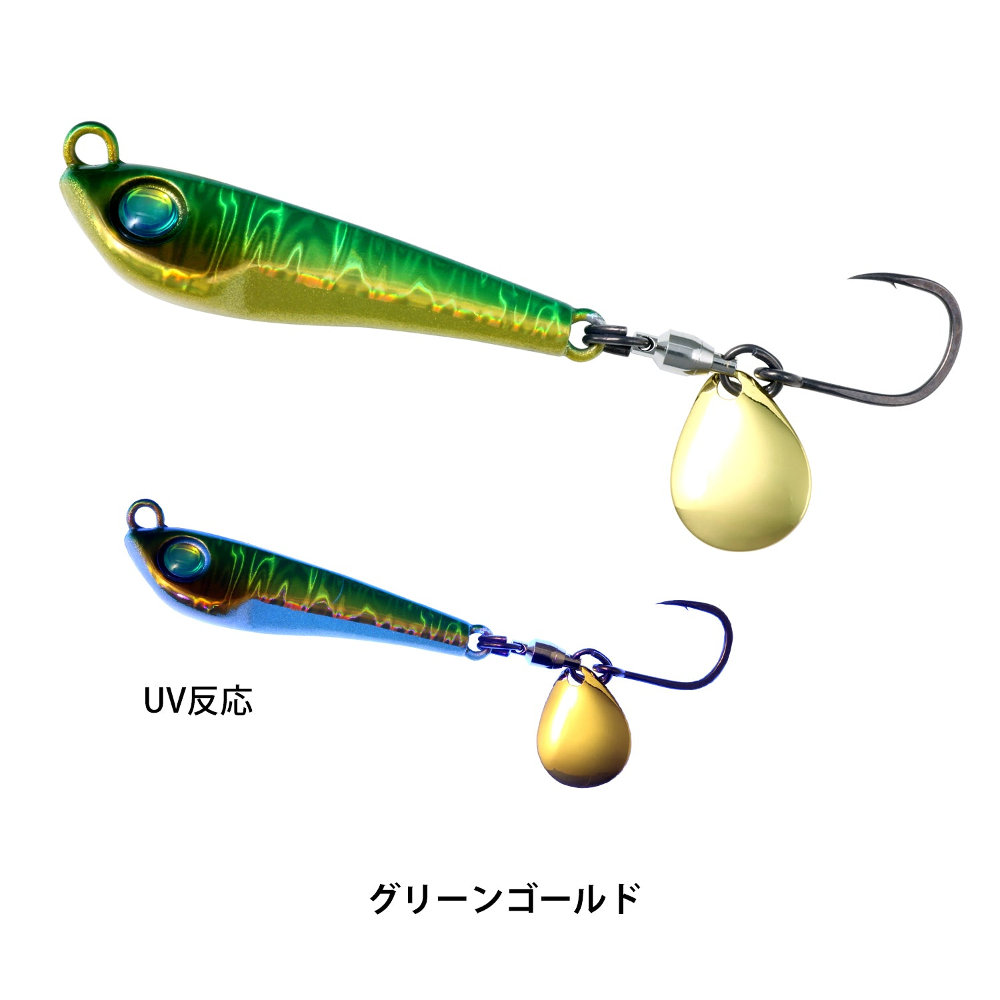
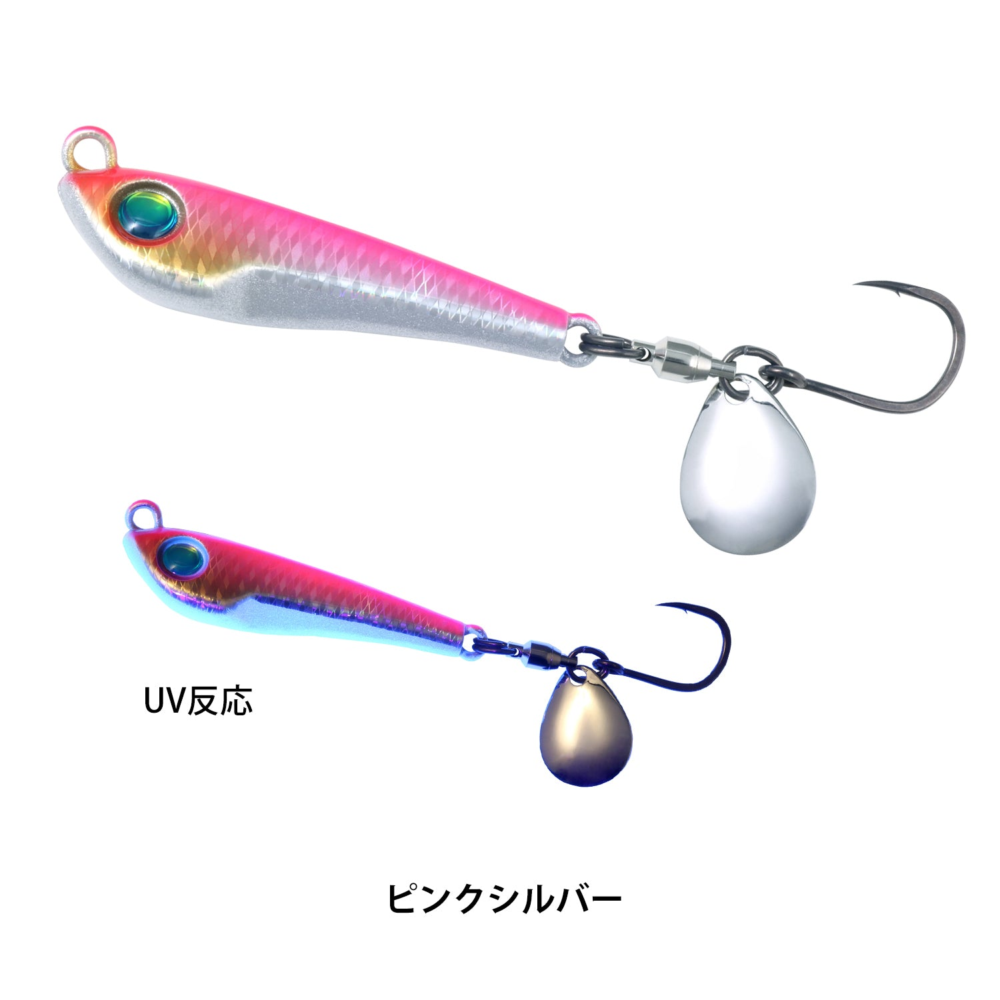
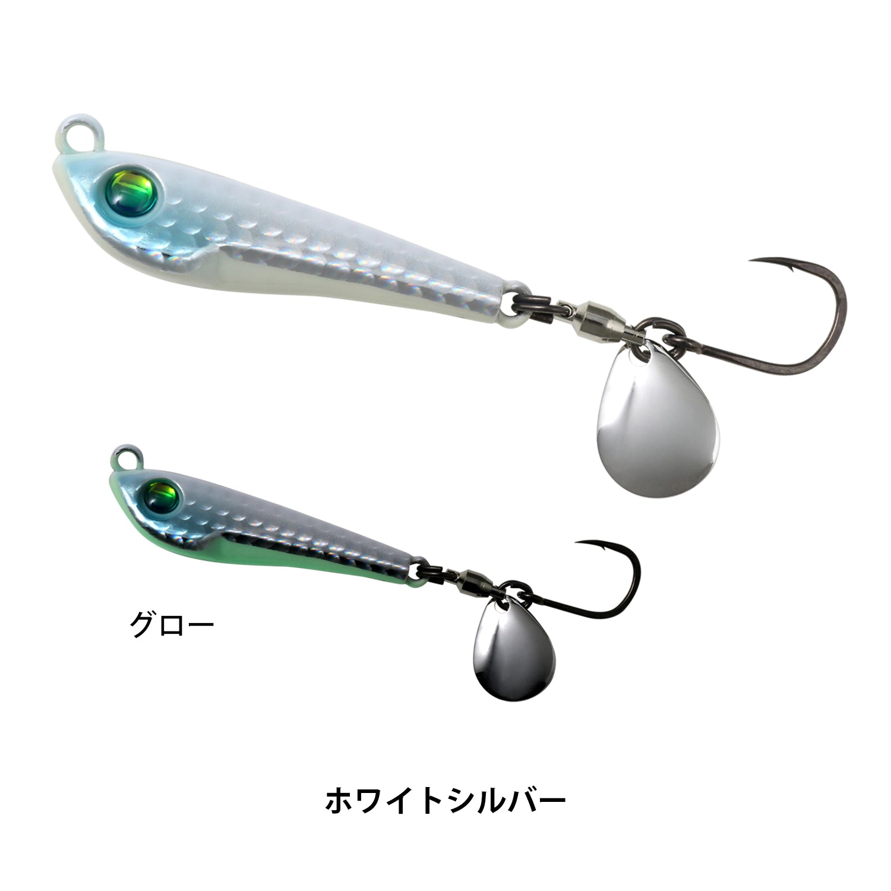

Bカスタムヘッド・ブレードジグ
Bカスタムヘッド・ブレードジグは、デプスのソルトブランド（d.s.w）のブレードジグです。
デプスを代表するスピナーベイト「Bカスタム」ゆずりの低重心ヘッドで、超高速リトリーブでも浮き上がらず、狙ったレンジをまっすぐ引けるのが最大の特徴。「速さを支配する、ブレードジグ。」というキャッチコピーどおり、サワラ・青物ゲームで求められる速さと安定性を両立しています。

画像出典:deps公式WEB SHOP
スペック
- メーカー
- deps（デプス）
- タイプ
- ブレードジグ
- 重さ
- 30g／40g／50g／60g
- ブレード
- #2コロラドブレード（スイベル接続）
- フック
- 太軸シングルフック #1/0（30g・40g）／#3/0（50g・60g）
- カラー
- 全6色
- ターゲット
- サワラ・青物
- 価格
- 1,210円（30g・40g）／1,320円（50g・60g）（税込）
- 発売
- 2026年9月
▼今すぐチェック
Bカスタムヘッド・ブレードジグの特徴
Bカスタムゆずりの低重心ヘッドで、超高速巻きでもブレない
-
Bカスタムのヘッドで高速でもまっすぐ
スピナーベイト「Bカスタム」のDNAを受け継ぐ低重心ヘッドで、高速域で起きやすい浮き上がりや姿勢の乱れをおさえる。超高速リトリーブでもブレずに泳ぎ続け、広い範囲を回遊するサワラにも効率よくアプローチできる。
-
ヘッドの明滅×ブレードのフラッシング
ヘッドのフラット面が生む明滅効果と、#2コロラドブレードの強烈なフラッシングの相乗効果で、遠く離れた魚にも存在をアピールする。スイベル接続で、超高速巻きでもブレードがすぐに立ち上がり、安定して回る。
-
太軸シングルフックで掛けて獲る
高強度の太軸シングルフックで、フックのたわみをおさえてフッキングパワーを確実に伝える。コンパクトなヘッドが適度に水を押すので、引き心地が良く、潮の変化も感じ取りやすい。
Bカスタムヘッド・ブレードジグの使い方
キャストしてボトムや狙いのレンジまで沈めたら、ロッドを止めたまま、リールをできるだけ速く巻くのが基本です。
低重心ヘッドなので、速く巻いても浮き上がらずに同じレンジを引き続けられます。速巻きで反応がない時は、巻くスピードを少し落としたり、途中でフォールを入れたりして変化をつけましょう。
Bカスタムヘッド・ブレードジグの得意な状況
サワラ・サゴシや青物が広い範囲を回遊している場面で出番です。
サワラは速いものに反応しやすい魚なので、超高速巻きでもレンジがブレないBカスタムヘッドは、サワラ狙いでよく釣れるのが強み。岸からは30g・40g、船や深い場所では50g・60gと使い分けましょう。
ワンポイント
サワラの歯でリーダーを切られる「カッター」が多い時は、太めのリーダーやワイヤーリーダーを入れると安心です。速く巻くほど魚の反応が良くなることも多いので、まずは全力の速巻きから試してみましょう。
サワラ狙いならワイヤーリーダーも
サワラ・サゴシの鋭い歯でリーダーごとジグを切られないように、ジグの前に30cm以内の短いワイヤーリーダーを付けておくと安心です。カッターが少ない日は外して、状況に合わせて使い分けましょう。くわしくはサワラのブレードジギング完全ガイドで紹介しています。

人気カラー
Bカスタムヘッド・ブレードジグの人気カラーを紹介します。

オレンジゴールドオレンジと金のアピールカラー。朝夕のマズメやにごりに。

グリーンゴールド青物狙いの定番の緑金。朝マズメや曇りの日に。

ピンクシルバーピンクとシルバーで、日中でもよく目立つ。

ホワイトシルバー白いシルエットとシルバーのフラッシング。澄んだ水や日中に。
画像出典:deps公式WEB SHOP
▼今すぐチェック
Bカスタムヘッド・ブレードジグに似ているルアー
-
 メタルマジックTG
アクアウェーブ
詳細はこちら＞
メタルマジックTG
アクアウェーブ
詳細はこちら＞
タングステンのスピンテールジグ。小さなシルエットで遠くまで飛ばしたい時に。
-
 ジグパラ ハイスピン
メジャークラフト
詳細はこちら＞
ジグパラ ハイスピン
メジャークラフト
詳細はこちら＞
高速巻きでもブレードが破綻しにくいブレードジグ。値段を抑えたい時に。
-
 サムライジグR スピン
ダイワ
詳細はこちら＞
サムライジグR スピン
ダイワ
詳細はこちら＞
ダブルフック仕様も選べるブレードジグ。ショートバイトが多い時に。